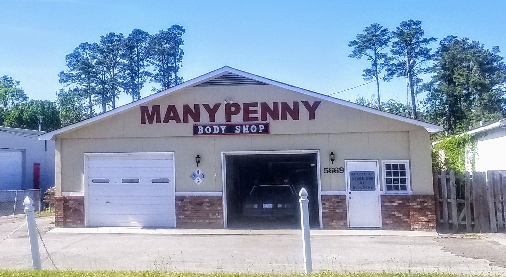

ESTIMATE · INSURANCE · REPAIR
Know your
next move.
After a crash, the paperwork can feel like another hit. Customers mention getting help with insurance conversations at Manypenny's Auto Body.
CALL 910.392.4777 ↗
TAKE THE PROCESS ONE STEP AT A TIME
Bring your questions to the conversation.
The shop can talk through what is visible on the vehicle and the repair estimate. Your insurance company makes coverage and claim decisions, so ask both the shop and insurer to explain anything that is unclear.
- Questions about what the estimate includes
- How the repair process may work with your claim
- What the shop needs before discussing next steps
- How to keep communication clear during the repair
Coverage, approval, rental benefits and payment arrangements depend on your policy and insurer. Confirm those details directly with them.
Need a human answer?
Call the shop and start with your questions.